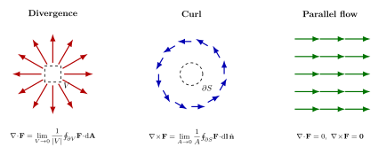

向量场的旋度与散度 — Maxwell 方程组里的算子从哪来?
翻开任何一本电磁学教材, 第一眼会看到这一组式子:
$$ \nabla\cdot\mathbf E=\frac{\rho}{\varepsilon_0},\quad \nabla\cdot\mathbf B=0,\quad \nabla\times\mathbf E=-\frac{\partial\mathbf B}{\partial t},\quad \nabla\times\mathbf B=\mu_0\mathbf J+\mu_0\varepsilon_0\frac{\partial\mathbf E}{\partial t}. $$
第一次见的人不免要问: $\nabla\cdot$ 与 $\nabla\times$ 究竟是什么? 倒三角是个微分算子简写, 这没问题; 但点乘和叉乘出现在一个"算子"上, 物理意义是什么? 为什么宇宙偏要用这两个算子, 而不是别的?
这一节的策略是: 先忘掉 $\nabla$, 直接问几何. 我们想给一个向量场 $\mathbf F:\mathbb R^3\to\mathbb R^3$ 在每一点 $\mathbf r$ 上配两个数值标记 — 一个表示"这点是不是源/汇", 一个表示"这点附近是不是有涡". 把这两件事用极限严格定义出来, 我们会发现它们恰好就是散度与旋度. $\nabla$ 作为符号是事后引入的便利, 不是出发点.
一、向量场: 给空间每一点配一个箭头
定义先放在前面. 一个 (光滑的) 向量场就是一个映射
$$ \mathbf F:U\subset\mathbb R^3\longrightarrow\mathbb R^3,\quad \mathbf r\mapsto \mathbf F(\mathbf r) =\bigl(F_x(\mathbf r),F_y(\mathbf r),F_z(\mathbf r)\bigr). \tag{1} $$
直观地说, 它在 $U$ 的每一点都钉上一支带方向带长度的小箭头. 流体的速度场 $\mathbf v(\mathbf r,t)$, 房间里的温度梯度 $-\nabla T$, 静电场 $\mathbf E(\mathbf r)$, 永磁体的磁场 $\mathbf B(\mathbf r)$ — 都是这样的"箭头分布".
但仅仅有箭头还不够. 物理学家关心的是箭头怎么变化: 在某点附近, 这些箭头是从该点向外发散, 还是收敛到该点, 还是绕该点旋转? 这三种行为分别对应三种不同的物理来源 — 发散意味着这里有"源" (e.g. 正电荷), 收敛意味着"汇" (负电荷), 旋转意味着附近有涡 (e.g. 磁感应来自电流环). 我们要找的, 是把这三种几何特征翻译成数字的方法.
为此我们需要两个准备. 第一是面积分: 把一个小面元 $\mathrm d\mathbf A$ 想成带方向的面 (方向沿外法线), $\mathbf F\cdot\mathrm d\mathbf A$ 就是单位时间穿过这个面的"通量"; 沿一闭合面 $\partial V$ 积分得到 $\oint_{\partial V}\mathbf F\cdot\mathrm d\mathbf A$, 这是流出体积 $V$ 的总通量. 第二是线积分: 沿闭合曲线 $\partial S$ 积分 $\oint_{\partial S}\mathbf F\cdot\mathrm d\mathbf l$, 这是 $\mathbf F$ 沿这条回路的"环流"或"做功".
有了这两件工具, 我们就能给"源密度"与"涡密度"以严格定义.
二、散度: 单位体积的流出量
取一点 $\mathbf r_0$, 围着它画一个小体积 $V$ (球也好, 立方体也好), 它的边界是闭合面 $\partial V$. 计算 $\mathbf F$ 流出 $V$ 的总通量 $\oint_{\partial V}\mathbf F\cdot\mathrm d\mathbf A$. 如果 $\mathbf r_0$ 是源, 这个通量是正的; 是汇, 是负的; 既不是源也不是汇, 流入等于流出, 通量为零. 把它除以 $V$ 的体积, 然后让 $V\to 0$ 收缩到 $\mathbf r_0$, 得到的就是每点的源密度:
$$ (\nabla\cdot\mathbf F)(\mathbf r_0)\;\equiv\;\lim_{V\to 0}\frac{1}{|V|}\oint_{\partial V}\mathbf F\cdot\mathrm d\mathbf A. \tag{2} $$
这就是散度的几何定义. 注意它跟坐标无关 — 不管你用直角坐标、柱坐标、球坐标, 通量与体积的比值都是同一个数.
但要算具体场的散度, 我们需要把 (2) 翻译成偏导. 取 $V$ 为以 $\mathbf r_0=(x,y,z)$ 为中心、棱长 $\Delta x,\Delta y,\Delta z$ 的小盒子. 它有六个面. 算 $x$ 方向两个面的通量: 右面 $x+\Delta x/2$ 处, 通量约为 $F_x(x+\Delta x/2,y,z)\,\Delta y\Delta z$; 左面 $x-\Delta x/2$ 处, 通量约为 $-F_x(x-\Delta x/2,y,z)\,\Delta y\Delta z$ (负号是因为左面外法线朝 $-x$). 两面相加, 用 Taylor 展开到一阶:
$$ F_x(x+\tfrac{\Delta x}{2},\cdot)-F_x(x-\tfrac{\Delta x}{2},\cdot)\;\approx\;\frac{\partial F_x}{\partial x}\Delta x. $$
所以 $x$ 方向贡献的通量是 $\partial_x F_x\cdot \Delta x\Delta y\Delta z$. $y,z$ 方向同理. 三者加起来除以体积 $\Delta x\Delta y\Delta z$, 取极限:
$$ \nabla\cdot\mathbf F=\frac{\partial F_x}{\partial x}+\frac{\partial F_y}{\partial y}+\frac{\partial F_z}{\partial z}. \tag{3} $$
这就是教科书上那个公式的来历. 它不是定义, 它是几何定义 (2) 在直角坐标下的具体计算.
反向写一遍: 把 (2) 跟 (3) 等同起来, 我们就得到了 Gauss 散度定理 $\int_V\nabla\cdot\mathbf F\,\mathrm dV=\oint_{\partial V}\mathbf F\cdot\mathrm d\mathbf A$ 的微分形式 — 整个 Gauss 定理只是说 (2) 中的极限, 在体积有限时也成立, 把"每点源密度"加起来等于"边界总通量".

三、旋度: 单位面积上的环流
对旋度的处理是平行的, 但维度低一级 — 我们换成面积. 取一点 $\mathbf r_0$, 在它附近选一个法向为 $\hat{\mathbf n}$ 的小面片 $S$, 边界是闭合曲线 $\partial S$ (右手定则定方向). 沿 $\partial S$ 走一圈, 计算 $\mathbf F$ 的环流 $\oint_{\partial S}\mathbf F\cdot\mathrm d\mathbf l$. 除以面积, 让 $S\to 0$:
$$ (\nabla\times\mathbf F)\cdot\hat{\mathbf n}\;\equiv\;\lim_{A\to 0}\frac{1}{A}\oint_{\partial S}\mathbf F\cdot\mathrm d\mathbf l. \tag{4} $$
这给出旋度在 $\hat{\mathbf n}$ 方向的分量. 把 $\hat{\mathbf n}$ 取遍三个坐标轴方向, 就拿到了整支旋度向量. 这不是巧合: 上式右边线性依赖于 $\hat{\mathbf n}$ — 把面绕 $\hat{\mathbf n}$ 旋一旋, 方向变了, 环流也按余弦律变 — 所以旋度的确是个向量场.
翻译成偏导? 取 $\hat{\mathbf n}=\hat z$, $S$ 为 $xy$ 平面内的小矩形, 棱长 $\Delta x\times\Delta y$. 沿四条边走 (右手定则即逆时针):
- 下边 ($y-\Delta y/2$): 长度 $\Delta x$, 沿 $+\hat x$, 贡献 $F_x(x,y-\Delta y/2,z)\,\Delta x$;
- 右边 ($x+\Delta x/2$): 沿 $+\hat y$, 贡献 $F_y(x+\Delta x/2,y,z)\,\Delta y$;
- 上边 ($y+\Delta y/2$): 沿 $-\hat x$, 贡献 $-F_x(x,y+\Delta y/2,z)\,\Delta x$;
- 左边 ($x-\Delta x/2$): 沿 $-\hat y$, 贡献 $-F_y(x-\Delta x/2,y,z)\,\Delta y$.
对前后两组取一阶 Taylor: $F_y(x+\Delta x/2,\cdot)-F_y(x-\Delta x/2,\cdot)\approx\partial_x F_y\,\Delta x$, 类似地 $F_x(x,y-\Delta y/2,\cdot)-F_x(x,y+\Delta y/2,\cdot)\approx -\partial_y F_x\,\Delta y$. 加起来除以面积 $\Delta x\Delta y$:
$$ (\nabla\times\mathbf F)_z\;=\;\frac{\partial F_y}{\partial x}-\frac{\partial F_x}{\partial y}. $$
同理另两个分量, 整体写成行列式:
$$ \nabla\times\mathbf F\;=\;\begin{vmatrix}\hat{\mathbf x}&\hat{\mathbf y}&\hat{\mathbf z}\\ \partial_x&\partial_y&\partial_z\\ F_x&F_y&F_z\end{vmatrix}\;=\;\bigl(\partial_y F_z-\partial_z F_y,\;\partial_z F_x-\partial_x F_z,\;\partial_x F_y-\partial_y F_x\bigr). \tag{5} $$
同样, 这个偏导式不是定义, 是几何定义 (4) 在直角坐标下的实现. 把 (4) 升级到任意闭合面 $S$ 上, 我们就得到了 Stokes 定理 $\int_S(\nabla\times\mathbf F)\cdot\mathrm d\mathbf A=\oint_{\partial S}\mathbf F\cdot\mathrm d\mathbf l$, 这是下一节的主题.
四、两条恒等式与一次具体计算
有了 (3) 和 (5), 两条恒等式立等可证.
恒等式 A: 任何旋度场都是无源的:
$$ \nabla\cdot(\nabla\times\mathbf F)=\partial_x(\partial_y F_z-\partial_z F_y)+\partial_y(\partial_z F_x-\partial_x F_z)+\partial_z(\partial_x F_y-\partial_y F_x)\equiv 0, $$
因为 $\partial_x\partial_y=\partial_y\partial_x$ 等等, 六项两两抵消.
恒等式 B: 任何梯度场都是无旋的:
$$ \bigl(\nabla\times(\nabla f)\bigr)_z=\partial_x(\partial_y f)-\partial_y(\partial_x f)\equiv 0, $$
同样靠混合偏导可换序.
这两条乍看像代数游戏, 实际上是物理结构的守门人. 静电场满足 $\nabla\times\mathbf E=0$ (无旋), 由恒等式 B 反推, 一定能写成某个标量势的梯度: $\mathbf E=-\nabla\phi$ — 这就是电势的存在性. 磁场满足 $\nabla\cdot\mathbf B=0$ (无源, "不存在磁单极子"), 由恒等式 A 反推, 一定能写成某个向量势的旋度: $\mathbf B=\nabla\times\mathbf A$ — 规范势 $\mathbf A$ 由此登场, 它将在卷三里成为整个量子场论的语言.
但代数式只在足够光滑的地方成立. 我们来做一次最重要的具体计算 — 库仑场 $\mathbf F=\hat{\mathbf r}/r^2=\mathbf r/r^3$ (这里 $r=|\mathbf r|$). 在 $\mathbf r\neq 0$ 处, 直接用 (3) 算:
$$ \nabla\cdot\!\left(\frac{\mathbf r}{r^3}\right)=\sum_i\partial_i\!\left(\frac{x_i}{r^3}\right)=\sum_i\!\left(\frac{1}{r^3}-\frac{3x_i^2}{r^5}\right)=\frac{3}{r^3}-\frac{3r^2}{r^5}=0. $$
那么散度处处为零? 不对. 用几何定义 (2) — 取 $V$ 为以原点为中心、半径 $R$ 的球, 通量 $\oint_{\partial V}(\mathbf r/r^3)\cdot\mathrm d\mathbf A=\oint(1/R^2)\,R^2\,\mathrm d\Omega=4\pi\neq 0$. 这个通量与 $R$ 无关, 全部"源"集中在原点. 唯一自洽的解释: 散度是个分布 (Dirac delta):
$$ \nabla\cdot\!\left(\frac{\mathbf r}{r^3}\right)=4\pi\delta^3(\mathbf r). \tag{6} $$
把 $\mathbf E=q\mathbf r/(4\pi\varepsilon_0 r^3)$ 代回 Maxwell, 我们立刻就有 $\nabla\cdot\mathbf E=q\delta^3(\mathbf r)/\varepsilon_0=\rho/\varepsilon_0$ — Gauss 定律自动成立. 这是 (2) 这个积分式定义胜过 (3) 这个偏导式的关键时刻: 偏导式在原点不可定义, 积分式照样工作.
顺便, 用同样的方法把 (6) 翻译成 $\nabla^2(1/r)=-4\pi\delta^3(\mathbf r)$ (因为 $\mathbf r/r^3=-\nabla(1/r)$), 这就是 Poisson 方程 $\nabla^2\phi=-\rho/\varepsilon_0$ 的 Green 函数, 也是卷三量子场论里所有 Feynman 传播子的低能祖宗.
五、Maxwell, Heaviside, Gibbs: 倒三角的诞生
今天我们写 $\nabla\cdot\mathbf E$ 觉得天经地义, 但这种符号一百五十年前是不存在的. 1873 年 Maxwell 出版《电磁通论》(A Treatise on Electricity and Magnetism), 二十条方程横跨整本书 — 用的是 Hamilton 1843 年发明的四元数语言. 一个四元数 $q=a+bi+cj+dk$ 同时携带一个标量与一个向量, 两个四元数的乘积同时含点积与叉积:
$$ (\mathbf u)(\mathbf v)=-\mathbf u\cdot\mathbf v+\mathbf u\times\mathbf v. $$
这种"打包"在 Hamilton 看来是优雅的, 在 Maxwell 看来是足够的. 但在工程师眼里 — 太复杂. 一个搞电报的英国人 Oliver Heaviside 在 1880 年代决定动刀, 把四元数劈开: 标量积归点乘, 向量积归叉乘, 各算各的. 他自学硬刚 Maxwell 二十方程, 重新表达为今天我们熟悉的四个 (实际上是把 $\nabla\cdot,\nabla\times$ 引进来作为简写). 几乎同时, 大西洋彼岸的耶鲁化学家 Josiah Willard Gibbs 在给学生印的讲义《向量分析的要素》(Elements of Vector Analysis, 1881–1884) 里独立做了一样的事.
剩下的就是历史. 四元数派 (以 P. G. Tait 为首) 与向量派 (Heaviside, Gibbs) 在 1890 年代展开一场至今仍被称作"Quaternion War"的论战, 互相在 Nature 上撰文. Heaviside 写得辛辣: "四元数是过分复杂、过分昂贵的工具, 而向量代数就是一把够用的螺丝刀." 二十世纪初, 物理学普遍倒向向量分析 — 不是因为它更深, 而是因为它更便宜: 一个工程师不需要懂结合律不交换的代数也能算偏导, 而点叉两笔分开记的东西更适合大量重复运算. 直到 1928 年 Dirac 写下 $i\gamma^\mu\partial_\mu\psi=m\psi$ 时, 四元数家族 (Clifford 代数) 才以更高的语言 — 旋量 — 重新登场, 这是卷三的话题.
所以 $\nabla$ 这把工具的历史, 是一段"足够好"打败"完美"的故事. Maxwell 的二十方程比 Heaviside 的四方程更对称 (蕴含对偶性), 但远没有四方程好算; 而能算的语言, 总是赢的语言.
小结
散度与旋度都是几何对象: 一个测每点的单位体积通量, 一个测每点的单位面积环量. 它们的偏导表达式 (3)(5) 是几何定义 (2)(4) 在直角坐标下的具体计算, 而不是相反. 两条恒等式 $\nabla\cdot(\nabla\times)=0$ 与 $\nabla\times(\nabla)=0$ 蕴含了"标量势"与"向量势"的存在 — 卷一里 Maxwell 推光速 $c=1/\sqrt{\mu_0\varepsilon_0}$ 用的正是 $\nabla\times\mathbf E=-\partial_t\mathbf B$ 这个旋度方程; 卷二里 Boltzmann 方程把分布函数的"流"写作 $\partial_t f+\nabla\cdot(\mathbf v f)+\dots$, 还是同一种"通量密度"概念; 卷三里规范场强 $F_{\mu\nu}=\partial_\mu A_\nu-\partial_\nu A_\mu$ 是四维时空的旋度. 下一节 Stokes 与 Gauss 定理把"小盒子求和等于大边界"这件事推到一般曲面与一般体积, 我们将看到这两个定理如何统一为微分形式语言里的同一个 $\mathrm d\omega$ — 以及为什么这是物理学最深刻的对称之一.
▲